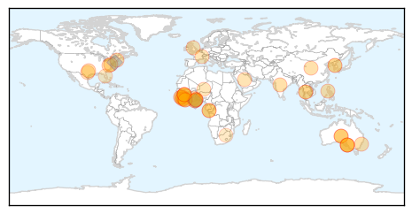
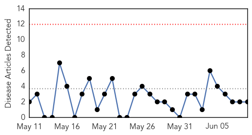
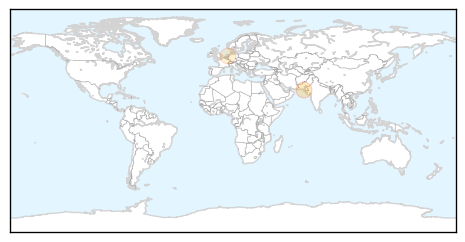
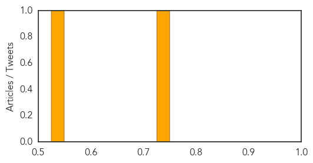

Ebola
30-Day Web Trend
0 alerts, 0 warnings
30-Day Twitter Trend
0 alerts, 0 warnings

Article Locations
Article Confidences

Top Articles:
- 1.000
- MGH patient monitored for Ebola no longer suspected of having virus
- 1.000
- 4 lessons from Ebola wars
- 0.999
- Ebola virus didn't mutate into more dangerous strain
- 0.999
- Cases of Ebola recede in West Africa, but fears of recurrence remain
- 0.999
- MERS death toll reaches seven; Hong Kong issues red-alert travel to South Korea
- 0.999
- Ebola crisis: UN's Ebola mission HQ in Ghana to close
- 0.997
- Labor calls for inquiry into Australia's response to Ebola crisis in West Africa
- 0.996
- Indian Woman Being Treated in U.S. for Drug-Resistant Tuberculosis
- 0.996
- Researcher helps discover Ebola virus in eye fluid of recovered survivor
- 0.995
- Hospital clears traveler who was monitored for possible Ebola
- 0.993
- Preventing the next global pandemic
- 0.992
- SA researcher helps discover ebola virus in eye fluid of recovered survivor
- 0.992
- Flinders News> Blog Archive > SA researcher helps discover ebola virus in eye fluid of recovered survivor
- 0.986
- No Ghanaian should be a guinea pig for Ebola experiments
- 0.985
- To Help Contain the Spread of Ebola in Sub-region Liberia National Red Cross Intervenes in Sierra Leone Ebola Fight
- 0.982
- UN praises Ghana for hosting Ebola response mission during outbreak -
- 0.981
- Why Mers doesn't stand a chance in drama-loving Philippines, Asia News & Top Stories
- 0.973
- Labor, Greens question Australia's Ebola response
- 0.973
- Labor, Greens question Australia's Ebola response
- 0.971
- Toronto Star by Dr. Sarilee Kahn, Assistant Professor of Social Work at McGill University
- 0.962
- S/Leone: NGO coalition wins international award
- 0.946
- Students Paid For Ebola Drugs Trial – Daily Guide Ghana
- 0.943
- Last year's Ebola strain weaker than that of 1976: study
- 0.931
- Health Adviser Presents Medical Supplies and Equipment to Hospitals
- 0.927
- Last year's Ebola strain weaker than that of 1976: study
- 0.917
- Liberia, Guinea Hold Cross Border Ebola Surveillance Dialogue
- 0.916
- Statement at the Opening of SLAJ 2015 AGM Protocols « Awoko Newspaper
- 0.913
- NDC Kicks Against Ebola Vaccine
- 0.913
- “The threat of another outbreak from a vaccine preventable disease is real” : Health Minister warns
- 0.879
- Perencevich on infection control in South Korea's MERS outbreak
- 0.868
- Could an Ebola Treatment Already Exist?
- 0.844
- 48th CBRN Brigade completes Ebola mission in Liberia
- 0.821
- United Nations World Food Programme - Fighting Hunger Worldwide
- 0.799
- SAVSU® Technologies' specialized shipping container used in Ebola vaccine clinical trials by the World Health Organization
- 0.777
- SAVSU® Technologies' specialized shipping container used in Ebola... -- SANTA FE, New Mexico, June 9, 2015 /PR Newswire India/ --
- 0.733
- EU rehabilitates 10 Peripheral Health Units « Awoko Newspaper
- 0.702
- Exclusive: Coulter Hammers Obama Administration For Hiding Identity, Immigration Status Of Foreigner Who Brought In Extreme Tuberculosis
- 0.695
- Pres. Sirleaf congratulates Sweden
- 0.684
- gods of Klefe not responsible for strange deaths
- 0.668
- Sierra Leone Foundation for New Democracy Kick-off
- 0.637
- Praise for South West service men and women involved in fight against Ebola
- 0.603
- Ebola crisis: UN's Ebola mission HQ in Ghana to close - Panorama
- 0.582
- Immunising Every Child is our Investment VP Foh
- 0.510
- (LEAD) N. Korea unlikely to close Kaesong complex over wage row
Top Tweets:
- 0.978
- Cases of Ebola recede in West Africa, but fears of recurrence remain - Los Angeles Times http://t.co/0s1qY69Oys ebola EVD
- 0.968
- Researcher helps discover Ebola virus in eye fluid of recovered survivor - Medical Xpress http://t.co/Gf3jqXpVFW ebola EVD
- 0.964
- Most of the jobs that are available now are Ebola-related. In Sierra Leone, Graduating Under Ebola http://t.co/eJuuQwAGCC via
- 0.957
- Study: Ebola virus didn't mutate into more dangerous strain - USA TODAY http://t.co/8pJSEK7tr2 ebola EVD
- 0.914
- Could an Ebola Treatment Already Exist? - BU Today http://t.co/6LPcxOQTTI ebola EVD
- 0.903
- Just In: Boston patient monitored for possible Ebola virus - Boston Herald http://t.co/sAi0RYEoKr ebola EVD
- 0.886
- Does focus on Ebola miss other deadly diseases? - Futurity: Research News http://t.co/NZWqfdvSZp ebola EVD
- 0.885
- How Louise Troh Survived Ebola - KERA News http://t.co/fL141ssDe2 ebola EVD
- 0.866
- Sierra Leone fieldpost: 'I believe Ebola victims deserve respect to the grave' - The Guardian http://t.co/3zXRFAKri2 ebola EVD
- 0.815
- Here's the Difference Between MERS and Ebola - TIME http://t.co/GqFAV2bigV ebola EVD
- 0.804
- Ebola: Mapping the outbreak timeline http://t.co/VkwvGHQADd
- 0.794
- Patient at MGH being monitored for possible Ebola - My Fox Boston http://t.co/I6MMpgtBry ebola EVD
- 0.792
- MERS: ANOTHER LESSON IN QUARANTINE AND HEALTHDISPARITY ebola http://t.co/tFVtnQrFs7
- 0.754
- Ebola: les travailleurs de l’action d’urgence payés grâce au http://t.co/d3PzOEsqIg
- 0.702
- GSK, Johnson & Johnson behind Ebola vaccines trial in Ghana - Starr 103.5 FM http://t.co/n3qd5sBinK ebola EVD
- 0.669
- Labor calls for inquiry into Australia's response to Ebola crisis - ABC Online http://t.co/a8XLzkcgCk ebola EVD
- 0.669
- Labor calls for inquiry into Australia's response to Ebola crisis - ABC Online http://t.co/PIre4vFtWP ebola EVD
- 0.665
- Here’s the difference between MERS and Ebola. Read more via: http://t.co/Zx241KANmg
- 0.654
- 9 June news overview on avianflu avianinfluenza Ebola EbolaResponse MERS http://t.co/bEWgmDqnsm
- 0.649
- G7 underwhelms with Ebola response http://t.co/OJ6pntV1mg
- 0.614
- RT: Here’s the difference between MERS and Ebola. Read more via: http://t.co/Zx241KANmg
- 0.553
- RT: What do measles, drug-resistant tuberculosis, MERS, SARS and Ebola have in common? They all spread in hospitals. http://t.co/FT…
- 0.539
- I got support from different people, but Ebola has taken them. In Sierra Leone, Graduating Under … http://t.co/eJuuQwAGCC via
- 0.534
- 30 times fewer people are being diagnosed with Ebola each week than in September last year. EbolaResponse
Hepatitis
30-Day Web Trend
0 alerts, 0 warnings

30-Day Twitter Trend
0 alerts, 0 warnings

Article Locations
Article Confidences
Top Articles:
- 0.740
- Stigma associated with hepatitis impacts lifestyle of 75% patients, reveals hospital-based WHO study
- 0.534
- New Post Hoc Analyses of Phase 3b Data Examine Treatment with Orencia (abatacept) Plus Methotrexate (MTX) in Patients with Early Moderate to Severe Rheumatoid Arthritis (RA) and Markers of Poor Progno
Top Tweets:
-
No tweets found for Jun 09, 2015